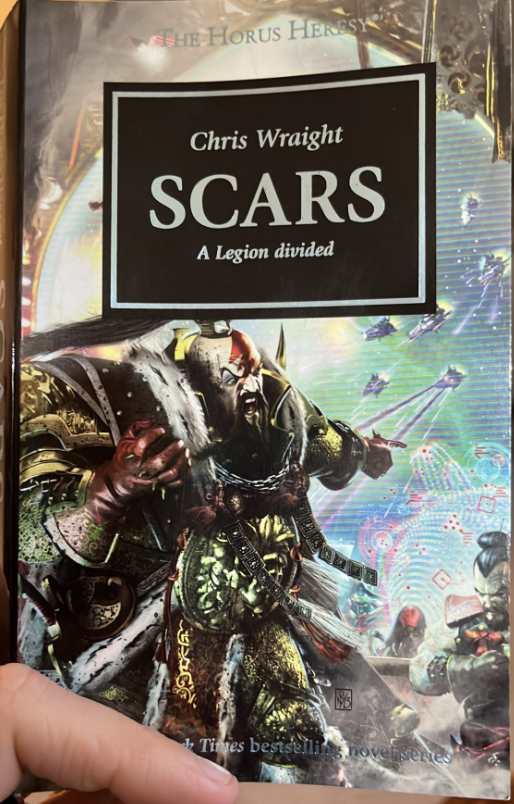

| Judge the book by its cover | Author | Scientific rating | Wise musings | |
|---|---|---|---|---|
The Moral Landscape (2010)The central thesis is that our morals and ethics should be guided by one overriding objective: to reduce suffering. Seems reasonable, and I was quite persuaded. But this being a Sam Harris book, he went meandering off down all sorts of interesting ginnels of tangential intellectual extravaganza. Apt quote:
Read in January 2023. |
||||
Angels of Caliban (2016)I found this one a bit of a chore at times, because there was so much background fluff I either didn’t remember from the earlier Dark Angel books, or that came from various novellas and audiobooks that I have never read/heard to begin with. This can be a downside of following an abbreviated reading list, but - come on, who has read ALL the novellas? Come on. Anyway, the bits that were not set on Caliban (which is a bit dull) were still pretty good. And they are the main reason I read this one. It’s set on Ultramar and deals with the collapse of the mini-Imperium-Secundus thing. Main takeaway is that Lion El’Johnson is a bit of a surly “douche”.
| ||||
Big Blues: the Unmaking of IBM (1994)3 stars is a maybe a tad harsh, but it was a bit plodding. Nonetheless, very interesting. I just love hoovering up all the incidental details in these accounts of 80s tech companies. It was hard to keep up with all the different names (how many different managers did IBM have during this period?). But anyway, I learnt a lot about the history of IBM, and in particular, the period from the early 80s to the early 90s where they managed to cram in a lot of high highs and low lows. One day, I’d love to play around on the original PC. But I may have to content myself with an LGR Youtube video about it.Read in January 2023. |
||||
The Big Sleep (1939) |
Love it, love it, love it. I mean, I guess maybe I’d give it a 4.5 but I don’t do halves. I imagined I was Jean-Luc Picard the whole time I was reading it. Some of the language is very “of its time” and by that I don’t mean racist. I mean using vocabulary that I don’t recognise and have to go and look up. But you know, it’s not Shakespeare is it? It’s only 100 years old. 90, really. It was just one long wild ride. I use the phrase wild ride too much. Anyway, Philip Marlow ace detective really is quite an ace detective. I guess my only criticism is that he makes some amazing leaps of logic that turn out to be correct but is that more my fault for being a tumbling dickweed? Read in February 2023 | |||
|  | Scars (2014)This was great. GREAT! Could Chris Wraight be another Dan Abnett in the making? Or is it just that the White Scars are such a cool chapter? If the Space Wolves are Space Vikings then the White Scars are Space Mongols. They have quirks like “no dreadnoughts” and “they retreat a lot… on purpose”. And they don’t even know the Horus Heresy has broken out for ages because they are having too much fun killing Orks. Anyway, a cracking yarn. The Scars, it turns out, are basically the best hope for humanity, when you consider that the Blood Angels, Ultramarines and Dark Angels are all trapped together in a different part of the galaxy (thanks to LORGAR’s EVIL WARP STORM THING); the Raven Guard, Iron Hands and Salamanders are basically all dead; and the Imperial Fists and Space Wolves are busy shoring up Terra. That just leaves the Scars to actually try and slow Horus down. Wild. WILD.
|
|||
When Computing got Personal (2014) |
This went over A LOT of ground for such a shortish book. Enjoyable. Basically summarised the IBM book I read earlier this year in the space of a chapter, then also summarised that book about Steve Jobs I read a couple of years ago in the space of another chapter, and that book about Bill Gates in another chapter. And also covered Amstrads, Spectrums, BBC Micros, the birth of the internet. Still quite technical in places but I enjoyed being bamboozled by tech stuff rather than trying to remember the name of every executive in IBM in the 1980s. Read in February 2023 |
|||
Atomic Habits (2018) |
This is one of those books that, like, oh my god, everyone is talking about. It is very well written and concise, which I like. I also like how it is free of a lot of the self-help "you can do it, oh my god, you go hero, yeah baby, wave that flag, love yourself, yee-haw" stuff that you can find in some other books of the same genre. IT is very practical, I guess is what I am saying. Do X, because of Y, and you should hopefully find that Z. Each chapter goes through some concrete techniques, the ultimate aim of which will be to make you into less of a slob. As always, I am not sure if I will actually implement more than about 5% of this into my life. Although as he makes very clear in the book, even small changes to your routines can make a huge difference over the long-term. One example: environmental cues. Change up your surroundings to help encourage better habits. So, if you want to drink less, don't routinely have beer in your fridge. Put it in there when you want one. If you still want one by the time it is cold, go ahead and drink it! Yee-haw, baby! Read in March 2023 |